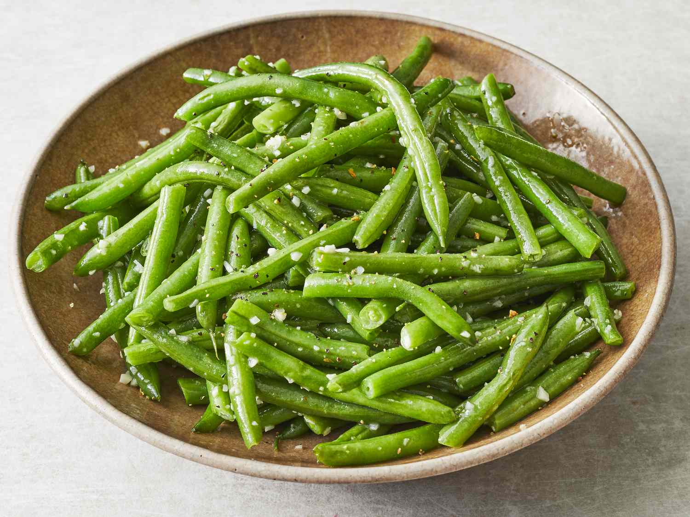

Green Beans
I just made this recipe today and it was declious. Next time I need to remember to cut the edges before tossing the green beans.

Ingredients
- One pound of green beans
- Balsamic vinegar
- Olive oil
- Salt and pepper
- Fresh garlic (or garlic powder)
Directions
- Cut the edges off the snap peas.
- Toss the snap peas in balsamic vinegar and olive oil first, then toss in remaining ingredients. Let sit for 5-10 minutes.
- Place in air fryer (or convection oven) at 375 degrees for ~15 minutes. Until green beans are crisp and starting to darken.